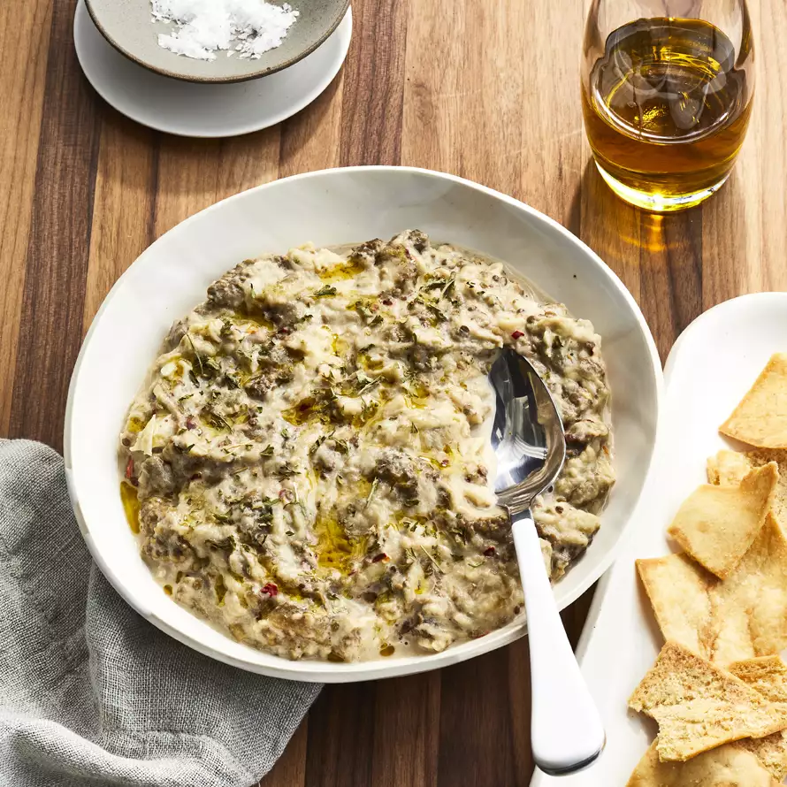

Traditional Baba Ghanoush

Description
A traditional recipe for this eggplant dip. It consists of baked eggplant with garlic, lemon juice, and tahini sauce. Dip into this with pita bread and you have yourself a delicious-and-light appetizer.
Ingredients
- 1 large eggplant
- 1 ½ tablespoons tahini sauce
- 4 cloves garlic, smashed
- ½ lemon, juiced
- ½ teaspoon red pepper flakes (Optional)
- salt to taste
- 1 tablespoon olive oil, or to taste
- 1 pinch dried parsley flakes, for garnish
Description
- Preheat oven to 400 degrees F (200 degrees C). Arrange oven racks so you have one low and one high in the oven.
- Cut a shallow slit along the side of the eggplant and place into a baking dish.
- Roast in preheated oven on the lower rack until the eggplant is completely shrunken and soft, about 40 minutes. Move dish to higher rack and continue baking until the skin is charred, about 5 minutes more. Let eggplant cool until cool enough to handle.
- Peel and discard skin from eggplant. Put eggplant into a bowl; add tahini, garlic, lemon juice, red pepper flakes, and salt. Stir until ingredients are evenly mixed. Drizzle olive oil over the baba ghanoush and garnish with parsley.